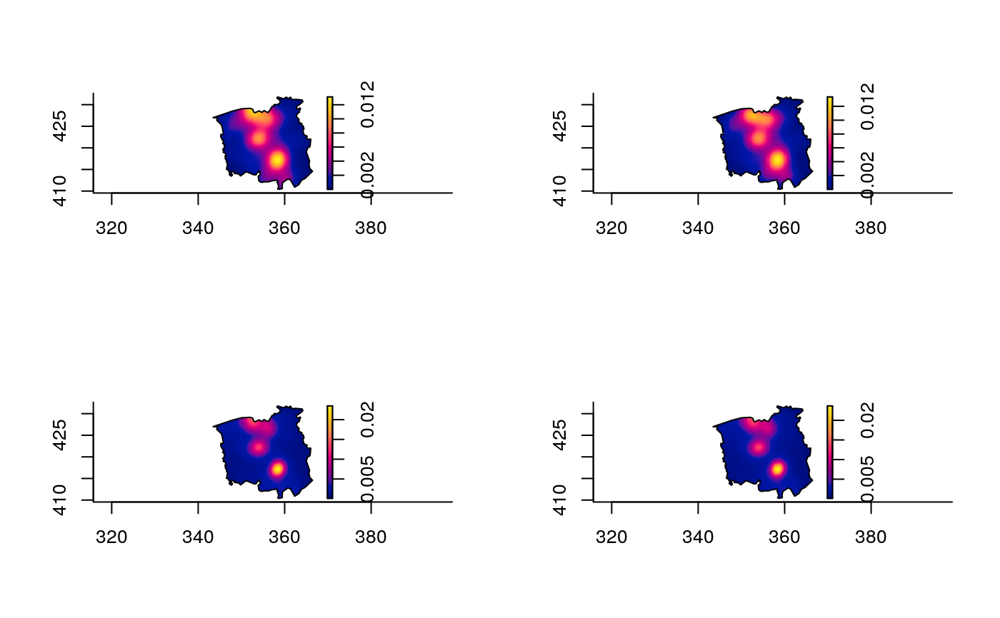

Provides an isotropic adaptive or fixed bandwidth kernel density/intensity estimate of bivariate/planar/2D data.
bivariate.density(
pp,
h0,
hp = NULL,
adapt = FALSE,
resolution = 128,
gamma.scale = "geometric",
edge = c("uniform", "diggle", "none"),
weights = NULL,
intensity = FALSE,
trim = 5,
xy = NULL,
pilot.density = NULL,
leaveoneout = FALSE,
parallelise = NULL,
davies.baddeley = NULL,
verbose = TRUE
)An object of class ppp giving the observed
2D data set to be smoothed.
Global bandwidth for adaptive smoothing or fixed bandwidth for constant smoothing. A numeric value > 0.
Pilot bandwidth (scalar, numeric > 0) to be used for fixed
bandwidth estimation of a pilot density in the case of adaptive smoothing.
If NULL (default), it will take on the value of h0. Ignored
when adapt = FALSE or if pilot.density is supplied as a
pre-defined pixel image.
Logical value indicating whether to perform adaptive kernel estimation. See `Details'.
Numeric value > 0. Resolution of evaluation grid; the
density/intensity will be returned on a [resolution \(\times\)
resolution] grid.
Scalar, numeric value > 0; controls rescaling of the variable bandwidths. Defaults to the geometric mean of the bandwidth factors given the pilot density (as per Silverman, 1986). See `Details'.
Character string giving the type of edge correction to employ.
"uniform" (default) corrects based on evaluation grid coordinate and
"diggle" reweights each observation-specific kernel. Setting
edge = "none" requests no edge correction. Further details can be
found in the documentation for density.ppp.
Optional numeric vector of nonnegative weights corresponding to
each observation in pp. Must have length equal to npoints(pp).
Logical value indicating whether to return an intensity estimate (integrates to the sample size over the study region), or a density estimate (default, integrates to 1).
Numeric value > 0; controls bandwidth truncation for adaptive estimation. See `Details'.
Optional alternative specification of the evaluation grid; matches
the argument of the same tag in as.mask. If
supplied, resolution is ignored.
An optional pixel image (class
im) giving the pilot density to be used for
calculation of the variable bandwidths in adaptive estimation, or a
ppp.object giving the data upon which to base a
fixed-bandwidth pilot estimate using hp. If used, the pixel image
must be defined over the same domain as the data given
resolution or the supplied pre-set xy evaluation grid;
or the planar point pattern data must be defined with respect to the
same polygonal study region as in pp.
Logical value indicating whether to compute and return the value of the density/intensity at each data point for an adaptive estimate. See `Details'.
Numeric argument to invoke parallel processing, giving
the number of CPU cores to use when leaveoneout = TRUE. Experimental.
Test your system first using parallel::detectCores() to identify the
number of cores available to you.
An optional numeric vector of length 3 to control bandwidth partitioning for approximate adaptive estimation, giving the quantile step values for the variable bandwidths for density/intensity and edge correction surfaces and the resolution of the edge correction surface. May also be provided as a single numeric value. See `Details'.
Logical value indicating whether to print a function progress
bar to the console when adapt = TRUE.
If leaveoneout = FALSE, an object of class "bivden".
This is effectively a list with the following components:
The
resulting density/intensity estimate, a pixel image object of class
im.
A copy of the value of h0
used.
A copy of the value of hp used.
A numeric
vector of length equal to the number of data points, giving the bandwidth
used for the corresponding observation in pp.
A pixel
image (class im), giving the `hypothetical' Abramson
bandwidth at each pixel coordinate conditional upon the observed data.
NULL for fixed-bandwidth estimates.
Edge-correction
weights; a pixel image if edge = "uniform", a
numeric vector if edge = "diggle", and NULL if edge =
"none".
The value of \(\gamma\) used in scaling the
bandwidths. NA if a fixed bandwidth estimate is computed.
The geometric mean \(G\) of the untrimmed bandwidth
factors \(\tilde{f}(x_i)^{-1/2}\). NA if a fixed bandwidth estimate
is computed.
A copy of the ppp.object
initially passed to the pp argument, containing the data that were
smoothed.
Else, if leaveoneout = TRUE, simply a numeric vector of length equal to the
number of data points, giving the leave-one-out value of the function at the
corresponding coordinate.
Given a data set \(x_1,\dots,x_n\) in 2D, the isotropic kernel estimate of its probability density function, \(\hat{f}(x)\), is given by $$\hat{f}(y)=n^{-1}\sum_{i=1}^{n}h(x_i)^{-2}K((y-x_i)/h(x_i)) $$ where \(h(x)\) is the bandwidth function, and \(K(.)\) is the bivariate standard normal smoothing kernel. Edge-correction factors (not shown above) are also implemented.
The classic fixed bandwidth kernel estimator is used when
adapt = FALSE. This amounts to setting \(h(u)=\)h0 for all \(u\).
Further details can be found in the documentation for density.ppp.
Setting adapt = TRUE requests computation of Abramson's (1982)
variable-bandwidth estimator. Under this framework, we have
\(h(u)=\)h0*min[\(\tilde{f}(u)^{-1/2}\),\(G*\)trim]/\(\gamma\),
where \(\tilde{f}(u)\) is a fixed-bandwidth kernel density estimate
computed using the pilot bandwidth hp.
Global smoothing of the variable bandwidths is controlled with the global bandwidth
h0.
In the above statement, \(G\) is the geometric mean of the
``bandwidth factors'' \(\tilde{f}(x_i)^{-1/2}\); \(i=1,\dots,n\). By
default, the variable bandwidths are rescaled by \(\gamma=G\), which is
set with gamma.scale = "geometric". This allows h0 to be
considered on the same scale as the smoothing parameter in a fixed-bandwidth
estimate i.e. on the scale of the recorded data. You can use any other
rescaling of h0 by setting gamma.scale to be any scalar
positive numeric value; though note this only affects \(\gamma\) -- see
the next bullet. When using a scale-invariant h0, set
gamma.scale = 1.
The variable bandwidths must be trimmed to
prevent excessive values (Hall and Marron, 1988). This is achieved through
trim, as can be seen in the equation for \(h(u)\) above. The
trimming of the variable bandwidths is universally enforced by the geometric
mean of the bandwidth factors \(G\) independent of the choice of
\(\gamma\). By default, the function truncates bandwidth factors at five
times their geometric mean. For stricter trimming, reduce trim, for
no trimming, set trim = Inf.
For even moderately sized data sets
and evaluation grid resolution, adaptive kernel estimation can be
rather computationally expensive. The argument davies.baddeley is
used to approximate an adaptive kernel estimate by a sum of fixed bandwidth
estimates operating on appropriate subsets of pp. These subsets are
defined by ``bandwidth bins'', which themselves are delineated by a quantile
step value \(0<\delta<1\). E.g. setting \(\delta=0.05\) will create 20
bandwidth bins based on the 0.05th quantiles of the Abramson variable
bandwidths. Adaptive edge-correction also utilises the partitioning, with
pixel-wise bandwidth bins defined using the value \(0<\beta<1\), and the
option to decrease the resolution of the edge-correction surface for
computation to a [\(L\) \(\times\) \(L\)] grid, where \(0 <L
\le\) resolution. If davies.baddeley is supplied as a vector of
length 3, then the values [1], [2], and [3] correspond to the
parameters \(\delta\), \(\beta\), and \(L_M=L_N\) in Davies and
Baddeley (2018). If the argument is simply a single numeric value, it is
used for both \(\delta\) and \(\beta\), with
\(L_M=L_N=\)resolution (i.e. no edge-correction surface
coarsening).
Computation of leave-one-out values (when
leaveoneout = TRUE) is done by brute force, and is therefore very
computationally expensive for adaptive smoothing. This is because the
leave-one-out mechanism is applied to both the pilot estimation and the
final estimation stages. Experimental code to do this via parallel
processing using the foreach routine is implemented.
Fixed-bandwidth leave-one-out can be performed directly in
density.ppp.
Abramson, I. (1982). On bandwidth variation in kernel estimates --- a square root law, Annals of Statistics, 10(4), 1217-1223.
Davies, T.M. and Baddeley A. (2018), Fast computation of spatially adaptive kernel estimates, Statistics and Computing, 28(4), 937-956.
Davies, T.M. and Hazelton, M.L. (2010), Adaptive kernel estimation of spatial relative risk, Statistics in Medicine, 29(23) 2423-2437.
Davies, T.M., Jones, K. and Hazelton, M.L. (2016), Symmetric adaptive smoothing regimens for estimation of the spatial relative risk function, Computational Statistics & Data Analysis, 101, 12-28.
Diggle, P.J. (1985), A kernel method for smoothing point process data, Journal of the Royal Statistical Society, Series C, 34(2), 138-147.
Hall P. and Marron J.S. (1988) Variable window width kernel density estimates of probability densities. Probability Theory and Related Fields, 80, 37-49.
Marshall, J.C. and Hazelton, M.L. (2010) Boundary kernels for adaptive density estimators on regions with irregular boundaries, Journal of Multivariate Analysis, 101, 949-963.
Silverman, B.W. (1986), Density Estimation for Statistics and Data Analysis, Chapman & Hall, New York.
Wand, M.P. and Jones, C.M., 1995. Kernel Smoothing, Chapman & Hall, London.
data(chorley) # Chorley-Ribble data from package 'spatstat'
# Fixed bandwidth kernel density; uniform edge correction
chden1 <- bivariate.density(chorley,h0=1.5)
# Fixed bandwidth kernel density; diggle edge correction; coarser resolution
chden2 <- bivariate.density(chorley,h0=1.5,edge="diggle",resolution=64)
# \donttest{
# Adaptive smoothing; uniform edge correction
chden3 <- bivariate.density(chorley,h0=1.5,hp=1,adapt=TRUE)
#> ================================================================================
# Adaptive smoothing; uniform edge correction; partitioning approximation
chden4 <- bivariate.density(chorley,h0=1.5,hp=1,adapt=TRUE,davies.baddeley=0.025)
#> ================================================================================
par(mfrow=c(2,2))
plot(chden1);plot(chden2);plot(chden3);plot(chden4)

# }